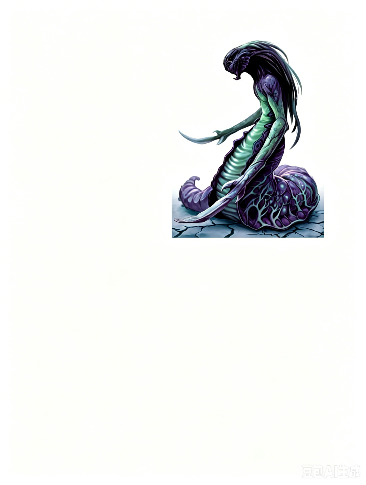

大型人形怪物 | 挑战级数 4这是一种怪异的类人形与巨型蠕虫的混合生物。它的下半身拖曳着地面滑行，而人形的上半身拥有两只手臂，每只手臂末端是一片由骨骼和软骨形成的长刃。
泽恩刃奴 ―― 始终为中立邪恶。
| 生命骰 | 5d8+25（47HP）；快速治疗 2 (fast healing 2) |
| 先攻 | +1 |
| 速度 | 40 英尺 (8格) |
| 防御等级 | 15，接触 10，措手不及 14（-1体型，+1敏捷，+5天生） |
| 基本攻击/擒抱 | +5 / +13 |
| 攻击 | 2次骨刃攻击，每次 +9 (2d6+4) |
| 全力攻击 | 2次骨刃攻击，每次 +9 (2d6+4) |
| 远程攻击 | 捕网投掷，+6 接触攻击 (纠缠 entangle，见《玩家手册》第 119 页) |
| 占据/触及 | 10 英尺 / 10 英尺 |
| 特殊能力 | 黑暗视觉 60 英尺；免疫：毒素、麻痹、震慑；适应防御 (Ex) |
| 豁免 | 强韧 +6，反射 +5，意志 +3；适应防御 |
| 属性 | 力量 18，敏捷 12，体质 21，智力 6，感知 9，魅力 7 |
| 技能 | 跳跃 +8，聆听 +3，侦察 +3 |
| 专长 | 武器专攻 (骨刃)，武器专攻 (捕网) |
| 语言 | 泽恩语 (Zern) |
| 装备 | 捕网 |
| 进化 | 通过角色职业 |
| 偏好职业 | 战士；详见后文说明 |
| 等级调整值 | +4 |
适应防御 (Adaptive Defenses, Ex)：泽恩刃奴的身体结构极为坚韧，能够抵抗削弱其耐力或扰乱其身体机能的效果。它免疫所有需要通过强韧检定 (Fortitude save) 抵抗的法术和效果，除非该效果对物体有效或是无害的。它可以选择允许某些需要强韧检定的效果对其生效。
生物学与起源：与噬法者类似，刃奴是泽恩的阴险生物实验的产物。它们作为战士、哨兵和保镖使用。刃奴强壮、耐打且擅长战斗，是令人恐惧的敌人；同时，它们低下的智力和薄弱的个性使其非常适合作消耗品部队。
行为与心态：泽恩刃奴以近乎自杀的狂�嵝е矣谄湓蠖髦魅恕Ｋ�们会不惜一切代价保护其主人，并严格服从每一项命令。通常，刃奴会用自己的庞大身躯为泽恩提供掩护。在泽恩用其扭曲能量攻击敌人时，刃奴挡下敌人的攻势，确保主人的安全。
无指挥时：没有泽恩指挥时，刃奴会采用简单的战术：直接冲向最近的敌人，战斗直到目标被击杀。然后转向下一个敌人，重复这一过程，直至死亡或敌人全被消灭。
阵营：刃奴始终为守序邪恶，忠诚地效命于其主人。
生态与环境：泽恩刃奴 (Zern Blade Thralls) 分布在所有泽恩 (Zerns) 定居的地方。它们是泽恩的仆人和奴隶，由于智力低下，缺乏自主性。若被置于无人监管的情况下，刃奴只会沦为一头野兽般的存在。刃奴没有特定的栖息环境，它们完全按照泽恩人的指令行动，适应任何环境。
生命与繁殖：刃奴无性别，无法自行繁殖。它们只能由泽恩人通过其他生物塑造而成。刃奴不受疾病、毒素或其他生理问题的影响，理论上可以永生，但大多数在服役几年后就会战死。
身体特征：刃奴平均身高约为 7 英尺（约 2.1 米），体重平均达到 2,100 磅（约 953 千克）。
职业等级与进阶：泽恩刃奴很少成长进阶，但一些特别忠诚的个体可能会接受战士训练。刃奴绝不会成为施法者，这并不符合它们的本性。
泽恩视刃奴为可消耗的资源，始终将自己的安全置于刃奴的生命之上。刃奴被培养成完全接受即使是自杀式的命令。例如，刃奴可能会冲破敌人的战士阵线，承受多次借机攻击，只为攻击一名敌方施法者或弓箭手。
尽管刃奴是强大的战士，能够造成巨大伤害，但大多数泽恩仅将它们视为移动的盾牌。在战斗开始时，刃奴可能会发动几次攻击。如果其攻击无效，泽恩会命令它专注于防御，尤其是在面对强大到无法战胜的敌人时。在这种情况下，刃奴的唯一任务是保护泽恩：它可能采取防御性战斗姿态，甚至完全防御动作 (total defense action)，以尽可能拖延时间。此外，刃奴也可能使用“协助他人” (aid another) 动作，通常是提高泽恩的防御等级 (AC)。
其他用途：刃奴还会通过捕获生物为泽恩服务。它们受过训练，能够熟练使用网，将目标缠住并制服。目标被捕后，刃奴会将其拖回泽恩的巢穴，供主人进行实验。
有时，泽恩会将刃奴出售给其他种族。无论主人是谁，刃奴都会忠诚地服从，就像对待泽恩一样。
刃奴通常与泽恩同行，保护它们免受伤害并提供体力支持。
收集小队 (EL 8)：
一名泽恩和两名刃奴正在地牢中寻找新鲜的实验品。这名泽恩伪装成一名矮人，假装被两名刃奴困在网中，显得走投无路。刃奴故意假装攻击伪装的矮人，以引诱冒险者帮助。当冒险者试图拯救“矮人”时，刃奴会用网发动攻击。
伪装的泽恩在旁观战，毫不犹豫地牺牲刃奴，以获取关于潜在实验目标的更多信息。如果冒险者明显比刃奴更强，泽恩会等到他们击败刃奴后，暗中观察并记录他们的能力和战术。在战斗结束后，它可能感谢冒险者的帮助，然后离开去召集增援。
如果它认为能击败幸存者，则会现出真身展开攻击。
拥有 知识 (自然) 技能等级的角色可以了解有关泽恩刃奴的更多信息。当角色成功进行技能检定时，可获得以下情报，包括低难度检定揭示的信息：
知识 (自然) DC 14：这是泽恩刃奴，一种不自然的人形怪物生物。此结果揭示了所有人形怪物生物的特性。
知识 (自然) DC 19：刃奴是由一个名为泽恩的残忍种族创造出来的奴隶。这两种生物通常形影不离，刃奴负责保护其泽恩主人。
知识 (自然) DC 24：泽恩刃奴对毒素、震慑攻击，以及需要强韧豁免的能力免疫。